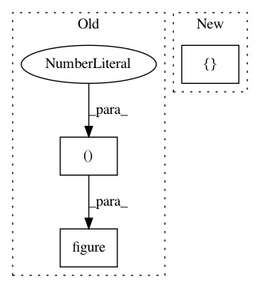

6d87b5fa03420a908fbf7e72868307dd6bc3223f,intro/matplotlib/examples/plot_grid.py,,,#,11
Before Change
import matplotlib.pyplot as plt
from matplotlib.ticker import MultipleLocator
fig = plt.figure(figsize=(8, 6), dpi=72, facecolor="white")
axes = plt.subplot(111)
axes.set_xlim(0, 4)
axes.set_ylim(0, 3)
After Change
import matplotlib.pyplot as plt
ax = plt.axes([0.025, 0.025, 0.95, 0.95])
ax.set_xlim(0,4)
ax.set_ylim(0,3)
In pattern: SUPERPATTERN
Frequency: 3
Non-data size: 3
Instances
Project Name: scipy-lectures/scipy-lecture-notes
Commit Name: 6d87b5fa03420a908fbf7e72868307dd6bc3223f
Time: 2016-09-15
Author: gael.varoquaux@normalesup.org
File Name: intro/matplotlib/examples/plot_grid.py
Class Name:
Method Name:
Project Name: SheffieldML/GPy
Commit Name: e35999b24ba3e070dc245f775c82d5adddebc116
Time: 2015-04-07
Author: ibinbei@gmail.com
File Name: GPy/plotting/matplot_dep/variational_plots.py
Class Name:
Method Name: plot
Project Name: neurodsp-tools/neurodsp
Commit Name: e44fe8792ca2ed11d2c9f5b61383d43e199992b2
Time: 2019-04-10
Author: tdonoghue@ucsd.edu
File Name: examples/plot_mne_example.py
Class Name:
Method Name: